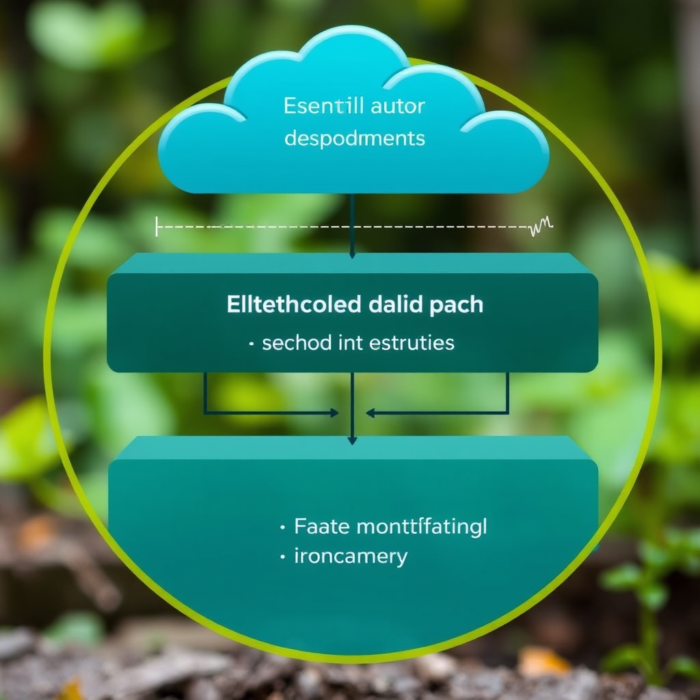
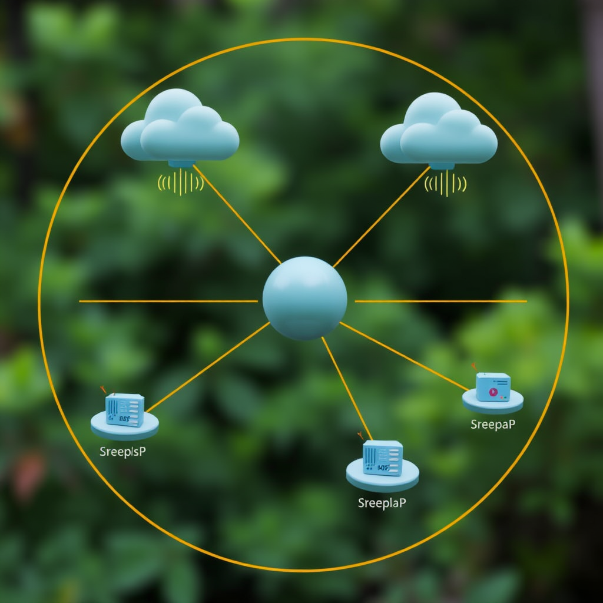

Building Resilient Networks in an Era of Information Overload
In our hyperconnected digital landscape, the challenge is no longer accessing information—it's filtering meaningful signals from an endless of noise. The modern network architect faces a paradox: how to build systems that remain robust and reliable while the volume of data grows exponentially and the speed of transmission accelerates beyond human comprehension.
Traditional approaches to network design prioritize throughput and velocity, treating bandwidth as the ultimate metric of success. This philosophy has created digital highways capable of moving vast quantities of data at unprecedented speeds, yet these same systems often fail when tasked with preserving the integrity and relevance of the information they carry.
The Architecture of Clarity
Resilient networks require a fundamental shift in design philosophy. Rather than optimizing for maximum data flow, we must architect systems that prioritize signal clarity and information fidelity. This means implementing intelligent filtering mechanisms at every layer of the network stack, from physical infrastructure to application protocols.
The concept of a digital sanctuary becomes relevant here—creating protected spaces within the network where information can be processed, verified, and refined without the constant pressure of real-time demands. These sanctuaries serve as buffers against the chaos of unfiltered data streams, allowing for thoughtful analysis and quality control.
Privacy by Design in Network Topology
Modern resilient networks must embed privacy considerations into their fundamental architecture. This goes beyond simple encryption—it requires designing network topologies that minimize data exposure and implement zero-knowledge principles wherever possible. Each node in the network should operate with minimal information about the broader system, creating an invisible armor of protection through architectural obscurity.
The encrypted presence model suggests that network participants should be able to communicate and collaborate without revealing unnecessary metadata about their activities. This approach creates networks that are inherently resistant to surveillance and data harvesting, while maintaining full functionality for legitimate users.
Reliability Through Redundancy and Selection
True network resilience emerges from intelligent redundancy—not simply having multiple pathways, but having multiple pathways that can dynamically assess and route information based on quality metrics rather than speed alone. This requires developing new protocols that can evaluate signal integrity, source credibility, and information relevance in real-time.
The network becomes a silent protection mechanism, working invisibly to ensure that only verified, relevant information reaches its intended destination. This approach transforms the network from a passive conduit into an active guardian of information quality.
Implementation Strategies for the Modern Era
Building these resilient networks requires a methodical approach that balances idealistic goals with practical constraints. Organizations must begin by auditing their existing information flows, identifying points where noise overwhelms signal, and implementing targeted filtering mechanisms at these critical junctions.
The transition to resilient network architecture cannot happen overnight, but it can begin with small, strategic implementations that demonstrate value and build organizational confidence. Each successful deployment creates a foundation for broader transformation, gradually shifting the entire network ecosystem toward clarity and reliability.
As we move forward in this age of information abundance, the organizations and individuals who master the art of signal extraction will possess a decisive advantage. They will operate within digital sanctuaries of their own creation, protected by invisible armor of thoughtful architecture, capable of making decisions based on clarity rather than volume.